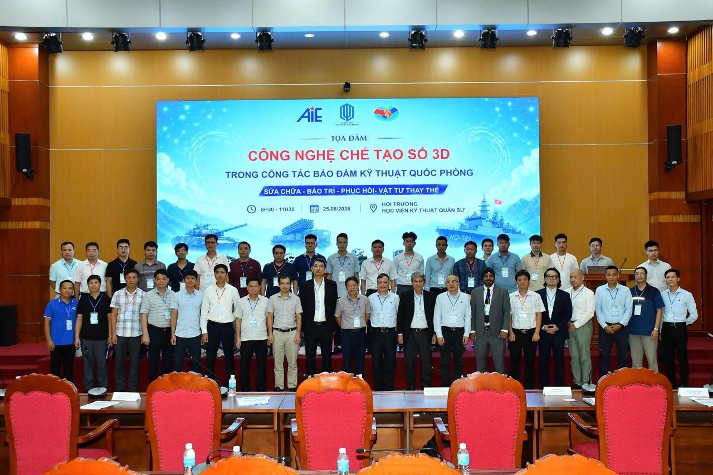
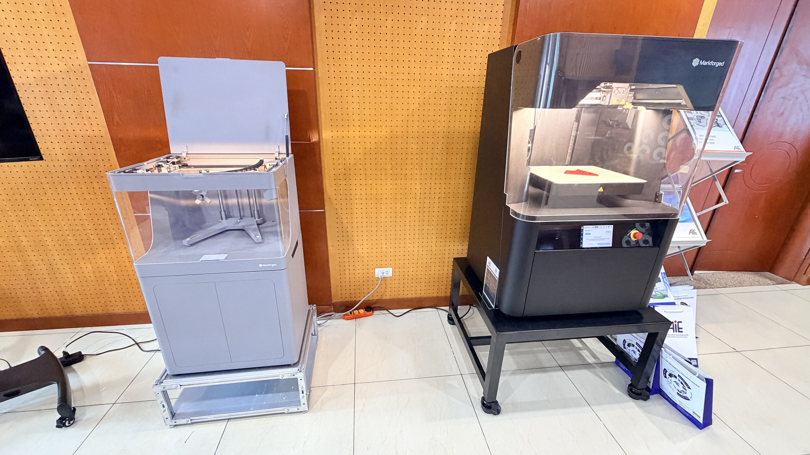
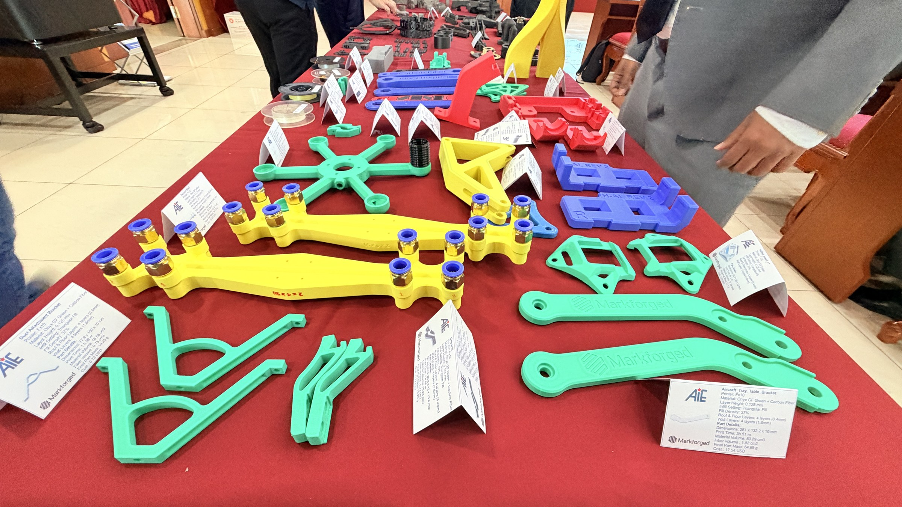
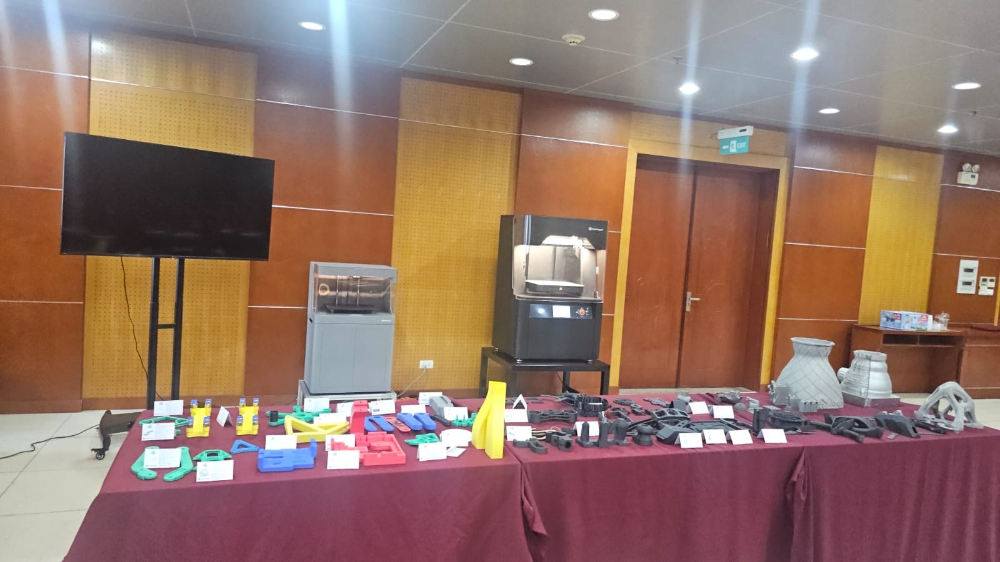
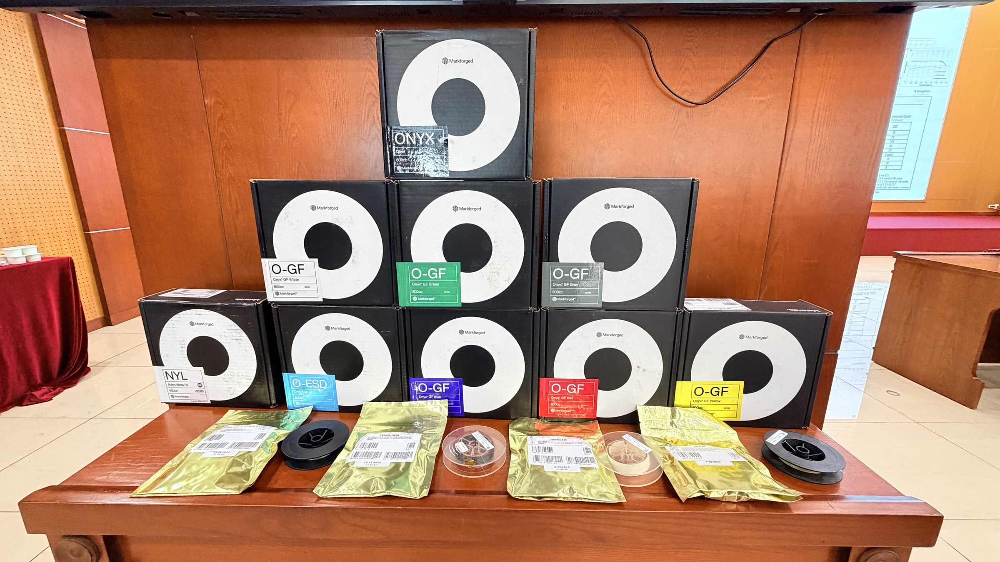
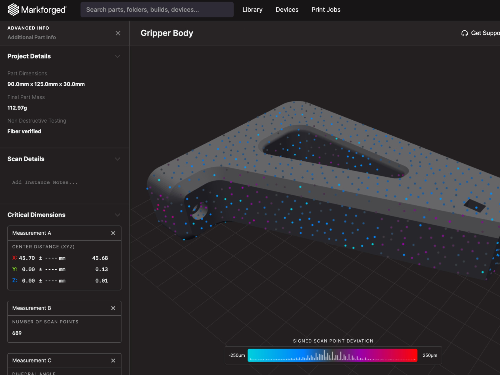
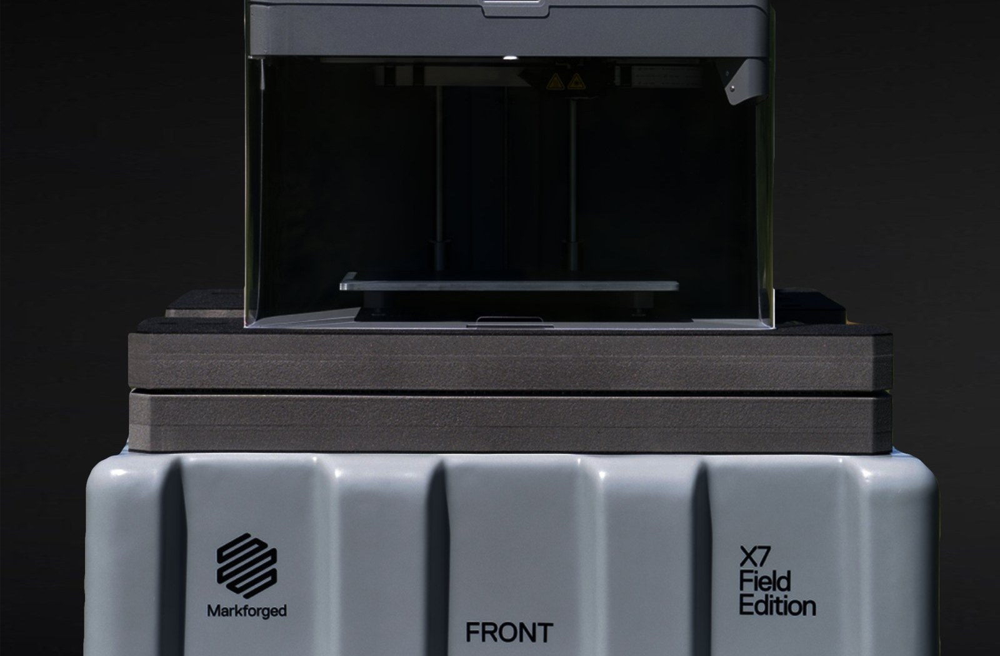

the maintenance unit makes the part
Brian Chen, Markforged Country Manager for Greater China and Vietnam, spoke in the session titled Digital Manufacturing Solutions and Practical Defense Applications, covering spare parts, unmanned systems, jigs and fixtures, and expeditionary manufacturing. He set out six applications already in service with armed forces, and put the question in one place: how do you sustain a platform still in service once its parts go out of production.
“A component goes out of production, but the platform stays in service. How do you sustain it?”
Brian Chen · Country Manager, Greater China and Vietnam, Markforged · Hanoi, 25 August 2026
The subject of the day
The agenda pointed at one thing throughout: what to do when parts for legacy equipment can no longer be bought
The Academy leadership opened the seminar, followed by Hoang Duc Bang of AIE on modern challenges in defence technical support, MRO and spare parts provisioning. The problem the organisers put on the table was specific: parts for legacy platforms remain short, outside sources stop supplying, procurement is slow, and the only hedge is to hold stock, so inventory cost sits directly against maintenance readiness.
Their proposed framework was a digital materiel warehouse with print on demand, drawn as a single chain: scanning and measurement, reverse engineering, optimisation, 3D printing, inspection, and then service use. The part is no longer held physically in a warehouse but as a verified file, printed on the day it is needed.
Three sessions followed: AIE introduced Markforged composite and metal technologies, Brian Chen presented the fielded evidence, and the tea break was given over to a full hour of hands on demonstration in three stations, covering 3D digitising, building a digital spare parts library through reverse engineering, and producing parts directly on Markforged systems. Scanning used ATOS 5, ATOS Q and GOM Scan 1; printing used Markforged composite systems.


Five capabilities
Brian Chen broke the role of digital manufacturing in sustainment into five items, each matching a theme on the agenda
The five are not product features. They are five gaps in the supply line, and each had a corresponding example in the demonstrations and cases presented that morning.
The fifth is where the whole seminar converged. The organisers' digital materiel warehouse, the Academy's technical support agenda and Markforged's distributed deployment all describe the same substitution: holding capability instead of holding parts.
Evidence already in service
Six cases, all from published sources, none of them an internal estimate
At a US Army national training centre the problem was a classic obsolescence case. A hatch plug for a night driving vision system cost 10,000 US dollars and took three months through conventional routes. The unit redesigned it from ten parts to four and printed it on site for 230 US dollars. Across parts of this kind the regiment has saved 244,000 US dollars.
The US Air Force 27th Special Operations Support Squadron prints night vision goggle helmet mounts with the spacer built in, replacing an assembly with a single part for under five US dollars in a few hours, against 100 US dollars or more and weeks of shipping for the commercial equivalent. For units where every gram carried is a decision, replacing an assembly with one part is itself a specification gain.
The US Navy took it to sea. In July 2022 an X7 Field Edition was installed aboard a Virginia class nuclear attack submarine, and in October that year another went aboard an amphibious assault ship as the composite element of a hybrid manufacturing cell. Additive equipment is now aboard nine surface ships, three of them aircraft carriers. In July 2026 a further twelve machines were delivered to the Navy training schoolhouse, so sailors train ashore on the same equipment they will use at sea.
The closest to a field scenario is expeditionary manufacturing. During a joint logistics exercise in the Republic of Korea in July 2026, a strainer on a rigid hull inflatable boat failed. Inside an expeditionary fabrication shelter the team scanned the part, rebuilt the geometry and printed the replacement on X7 Field Edition machines the same day, and the craft returned to duty that day. The Royal Australian Navy deployed a shipping container holding three printers during a major exercise, printing communications box exoskeletons, drone controller brackets and tent pegs in the field.
The sixth is unmanned systems. A maker of surveillance and payload delivery drones moved airframe structural parts to printed production, with continuous carbon fibre replacing machined aluminium and titanium, and kept the print farm in house so that no design file leaves the building. Another prints tail assemblies as connected parts, cutting lead time from two weeks to two days.
The other forces on the slides that morning
The same equipment in seven countries; what differs is not the machine but where it sits
The scale of afloat deployment is larger than most assume. X7 systems are installed aboard US, Australian, Singaporean and Japanese naval vessels, producing spare parts while under way. Mapped onto Vietnamese geography the point was put plainly: a part needed in Hanoi is made in Hanoi, a part needed in Haiphong is made in Haiphong, with no transport in between.
The Royal Australian Navy list goes down to part level. Camera brackets, CCU circuit board brackets and connector moulds were aluminium and are now printed in carbon fibre; on small craft the list includes housings, bearing supports, rocker parts, seat foundations, levers, helm tubes and vent spacers. The reason given for the substitution was four words: cheaper, faster, stronger, self-reliant.
At the US Navy shipyard in Okinawa the route is metal, used for low volume spare parts production. The briefing made a point of one thing: no dedicated facility is required and no kiln, an ordinary workshop is enough. For units still costing out infrastructure, that answers a threshold question.
The British and Australian armies put the whole manufacturing cell inside a shipping container, printers within, and move the container to wherever it is needed. The Australian Army has a second use that is easy to underrate: grenade training simulators printed to the same weight as the live round, to reduce injury risk during training. Not throughput, safety.
The Netherlands military field workflow was shown as video on the day, in four steps: design a vehicle gun mount bracket in CAD, run engineering analysis to establish the strength required, print within the same environment and validate the strength in simulation, then mount it on the vehicle for live dynamic testing. The Spanish Air Force case is about sustaining an ageing fleet, producing end use parts, jigs, fixtures and maintenance tooling at the airfield in place of tools that previously had to be machined.
The most extreme environment is orbital. Printed parts made by Sidus Space in Onyx FR-A spent a year exposed on the External Flight Test Platform outside the International Space Station and came back structurally intact and serviceable; the same material system is used for structural parts on the company's LizzieSat satellite.
The deck quoted a serviceman, the most direct answer of the morning to why the capability belongs forward: “If we need parts for a mission critical component that has broken, we can get it back up and going in the shelter. If we are going to be island hopping, we cannot rely on the long term global supply chains. The repair part and the sustainer must move with us.”

Why the part can be trusted on equipment
Continuous fibre is laid into the part along the load path, and that is the dividing line from ordinary plastic printing
Onyx has a tensile strength of 40 MPa. For reference, 6061-T6 aluminium is 290 MPa. Onyx reinforced with continuous carbon fibre is 800 MPa. The fibre can be carbon, fibreglass, high temperature fibreglass or Kevlar, selected by load direction.
Metal runs a print, wash and sinter process, with materials including 17-4 PH stainless and 316L, the latter the grade used in naval and marine service. On the FX10 the metal capability is a bolt on module, so a unit can establish composite capacity first and add metal in stages rather than all at once.
The three metal stages were unpacked on site. The machine runs two materials at once: metal powder suspended in a two part polymer binder, and a ceramic release material laid as an interface between the part and its supports, so the supports come away by hand after the furnace. What comes off the build plate is the green part; a solvent wash removes part of the binder to leave the brown part, which then goes to sinter. At slicing the software scales the part up automatically to compensate for sintering shrinkage.
The furnace cadence is roughly one day per run. Sinter-2 is positioned for mid volume production and larger green parts; what comes out is fully dense and ready to use, and can be post machined or polished if the application requires it. On materials, the machine on the day was loaded with 17-4 PH stainless; after a changeover it prints the stainless range, tool steels, copper and Inconel.
Three systems cover three positions. The X7 Field Edition is the deployable one: its transit case is also its stand, two people can lift it, it draws under 300 watts, and it goes from packed to printing in under three minutes. The casing is purpose built for military use, can be parachuted into a drop zone and can run off a vehicle battery, printing carbon fibre and Kevlar parts. The FX10 is the industrial platform. The FX20 is the large format, high temperature machine for the largest composite parts and demanding aerospace polymers.
Brian Chen singled out a category that is usually passed over. In a sustainment organisation the quietest and largest saving is often not spare parts but tooling: the jigs, fixtures and gauges that used to be machined from metal. Every one of the six units he cited prints tooling.



Data sovereignty
The question a military audience always asks: does the file leave the site
Markforged software can run on a private network with no cloud connection, so the design file does not have to leave the site. Markforged was the first additive manufacturing company certified to ISO 27001 for information security management. Print data is encrypted at rest and in transit, and the printers run a hardened operating system aligned to the security configuration standards used in defence environments.
In a sustainment context the conclusion is concrete. A part that used to be ordered from abroad becomes a file the organisation holds, qualifies and prints itself. What an external purchase would otherwise disclose, namely which platform is being sustained and in what quantity, stays inside the organisation as well.
The qualification problem
The third session of the morning pushed to the hardest part: printing the shape is not the same as clearing the part for service
The speaker came from Collaborative Energy, formerly part of the GE Additive lineage, offering powder, machines, software and technology transfer consulting as one package. He opened with an example that has now run twelve years: the first fuel nozzle for the LEAP engine was produced in 2014 and certified by the US Federal Aviation Administration. The narrow body aircraft flown today between Hanoi and Ho Chi Minh City are most likely powered by LEAP engines containing printed fuel components.
He cited a set of figures that explains why sustainment is a real problem. A US Government Accountability Office report published in 2020 covers fiscal years 2011 to 2019 and 46 aircraft types: only three met their annual mission capable goals in a majority of those years, and 24, close to half, did not meet the goal in any year at all. Missing parts is among the principal reasons. The point was not a comment on the US military but the observation that even the best resourced system stalls on the supply side.
The methodology developed with the US Air Force runs in four steps: component identification, material and process development, application development and testing, and airworthiness qualification. The first step is a down select, ranking candidates on four criteria — cost, the performance required, suitability for printing, and alignment with the organisation’s strategy — so that the part is chosen before the machine, not after.
The part he showed was an engine oil sump cover. It sounds simple, but it goes into a fighter operating at high speed and high acceleration, so it has to pass stress, fatigue and high temperature testing before it is airworthy. The real threshold is not geometry: the material properties as printed and as processed must be shown to meet the original equipment manufacturer’s requirements, covering tensile, fatigue, density and porosity. Getting the shape right is the starting point.
Two things underpin all of it. First a quality system, founded on installation qualification and operational qualification, with aerospace parts meeting AS9100 Rev D. Second a material property data package covering low cycle fatigue, high cycle fatigue, density, porosity and tensile behaviour. Data of this kind takes years to assemble; with it an organisation can set its own material allowables and design allowables instead of rebuilding them from nothing.
He also described the most common shape of failure in additive: heavy initial investment, no fit found between the technology and the actual need, momentum lost, and the effort abandoned. And a note on design: the best use of additive is not a one to one copy of the original part but a redesign that consolidates components and improves the strength to weight ratio.
His closing position made a useful counterweight to the technical optimism of the morning: additive is a relatively new way of manufacturing, but it must comply with the same engineering requirements as conventional manufacturing. The technology is good; what decides the outcome is the right mindset and the engineering know how.
The organiser’s own track record
AIE laid out its process and its numbers for localising industrial parts in the same session
Tan Tien Industrial Equipment (AIE), one of the hosts, set out its own four step process in the afternoon session: disassembly and scan sampling, scan data processing and reverse modelling, 3D printing, then fitting and validation against indicators such as vibration and wear. Scanning uses ATOS series optical 3D systems; the company also represents German precision metrology equipment.
The following figures were given verbally by the host during the session. In a project building a digital parts library for a production line, more than one hundred components have been digitised to date. A part previously ordered from the original manufacturer at close to 500 dollars is produced in house for a little over 100 dollars; another carried an order price of 550 dollars. The original lead time was six to eight weeks. Gears were among the part categories mentioned.
The same speaker made a remark that runs against the direction of those figures and is worth recording precisely for that reason: in Vietnam the defence sector does not yet have a specific, settled process for this. The industrial side has a working method; what the defence side has ahead of it is turning that method into procedure.
The Vietnamese context
The other side of supplier diversification is several spare parts chains, each able to break on its own
The US International Trade Administration's country commercial guide records that Vietnam's military aircraft come from Russia, Poland, France and the Czech Republic among others, that the government is reducing reliance on any single supplier, and that it seeks to strengthen the domestic defence industrial base through co-assembly and co-production.
The institutional side is moving as well. The Law on National Defence and Security Industry and Industrial Mobilisation took effect on 1 July 2025, in seven chapters and 86 articles, creating formal space for private enterprises in the defence and security industry. The Vietnam International Defence Expo runs from 10 to 13 December 2026 at Gia Lam Airport in Hanoi, organised by the Ministry of National Defence.
The seminar addressed the other end of that structure. Acquiring new equipment has a policy and budget track. Sustaining equipment already in service depends on whether individual parts can be obtained at all. On the morning of 25 August, the room was concerned with the second.
What the morning did not settle
The gaps still open when the three sessions had finished
The first is that the vocabulary of qualification did not converge. Markforged spoke about certified materials and information security certification; Collaborative Energy spoke about installation qualification, operational qualification and AS9100. The Vietnamese side did not set out which standard would be used domestically to accept a printed military part. Both sides discussed qualification and were not discussing the same thing.
The second is governance of cross site sharing. The full value of distributed manufacturing arrives only when files move between bases, and the briefing presented that as the goal. Who may create a file, who may release it, and how files are controlled as they move between sites did not enter the discussion.
The third is the process itself. The host said so directly in the afternoon: the defence sector in Vietnam does not yet have a specific, settled process. That does not contradict the morning's demonstrations. The equipment is already running inside the Vietnamese defence system; what is missing is turning it into a repeatable, auditable procedure.
When the chair opened the floor before closing, no one took it. The exchange happened instead at the three demonstration stations during the break and over lunch, where attending units brought their own parts to the table for comparison. In a session of this kind that is the part that works.
How to begin
Brian Chen closed with a small first step rather than a procurement programme
In Viet Nam the starting point already exists locally. The Military Technical Academy, one of the hosts that morning, has been operating an FX20 supplied through Tan Tien Industrial Equipment JSC (AIE) since May 2026, the first in the Vietnamese defence system. The question is therefore not whether to introduce a technology that has yet to land locally, but which part to apply an existing capability to.
His suggestion had three steps: pick the one part that hurts most, the item the unit waits longest for or can no longer source at all; print it; test it against the unit's own acceptance criteria. Then decide on the evidence, not on a brochure.
In the chain shown that day, Markforged provides the fourth step. Scanning and measurement, reverse engineering and inspection are supplied by the other technologies present, which is why the organisers placed the three demonstration stations side by side.
“Start with one part, and let the part make the argument.” That is where he leaves it.
Application review for defence technical support
A feasibility review conducted by Markforged engineers against real parts and acceptance criteria, with a live demonstration available. Sessions can be arranged in Taiwan, China, Hong Kong or Vietnam.
Contact usSources
- Organisers' public event page and formal agenda: 3D Digital Manufacturing Technologies in Defense Technical Support and Logistics, 25 August 2026, Military Technical Academy auditorium, Hanoi; hosted by the Military Technical Academy (Le Quy Don Technical University) and Tan Tien Industrial Equipment JSC with the VAMI association
https://aie.com.vn/hoi-thao-cong-nghe-che-tao-so-3d-trong-cong-tac-bao-dam-ky-thuat-quoc-phong/ - US Army: obsolete hatch plug simplified from ten parts to four, 10,000 US dollars and three months against 230 US dollars, 244,000 US dollars saved — Markforged customer story
https://markforged.com/resources/case-studies/united-states-army - US Air Force 27th Special Operations Support Squadron, Cannon AFB: night vision goggle helmet mount printed as a single part — Markforged customer story
https://markforged.com/resources/case-studies/u-s-air-force-cannon-air-force-base - US Navy afloat manufacturing: an X7 Field Edition installed aboard a Virginia class submarine in July 2022; additive equipment aboard nine surface ships including three aircraft carriers — Naval Sea Systems Command release, as reported by the trade press
https://www.tctmagazine.com/navsea-achieves-success-with-markforged-3d-printer/ - US Navy schoolhouse: twelve Markforged X7 systems delivered in July 2026 for the afloat training programme
https://www.tctmagazine.com/us-navy-deploys-12-phillips-hybrid-manufacturing-12-markforged-x7-systems-to-support-sailor-training/ - Combined joint logistics exercise CJLOTS 26, Republic of Korea, July 2026: a rigid hull inflatable boat strainer scanned, rebuilt and printed the same day in an expeditionary fabrication shelter — US Department of Defense, DVIDS
https://www.dvidshub.net/news/570729/advanced-manufacturing-supports-joint-and-bilateral-readiness-cjlots-26-south-korea - Royal Australian Navy Deployable Additive Manufacturing and Repair container at Talisman Sabre 2025: three printers, one of them a Markforged X7 — Australian Department of Defence
https://www.defence.gov.au/news-events/news/2025-08-08/navy-prints-solutions-operational-problems - Drone airframe structural parts moved to printed production with design files kept in house — Markforged
https://markforged.com/resources/blog/3d-printed-drone-parts - Tsalla Aerospace: tail assembly printed as connected parts, lead time cut from two weeks to two days — Markforged application spotlight
https://markforged.com/resources/application-spotlights/how-markforged-parts-drive-more-reliable-and-robust-uav-designs-for-tsalla-aerospace - Information security, ISO 27001 certification, encryption and hardened operating system — Markforged
https://markforged.com/security - Vietnamese defence industry structure: aircraft sourcing, reduced single supplier reliance, domestic industrial base and co-production — US International Trade Administration, Vietnam Country Commercial Guide
https://www.trade.gov/country-commercial-guides/vietnam-defense-and-security-sector - Law on National Defence and Security Industry and Industrial Mobilisation, passed 27 June 2024 and effective 1 July 2025, seven chapters and 86 articles
https://lawnet.vn/thong-tin-phap-luat/en/thong-bao-van-ban-moi/vietnam-s-law-on-national-defense-and-security-industry-and-industrial-mobilization-2024-effective-as-of-july-1-2025-168544.html - US Government Accountability Office, GAO-21-101SP, Weapon System Sustainment: Aircraft Mission Capable Rates Generally Did Not Meet Goals and Cost of Sustaining Selected Weapon Systems Varied Widely, November 2020, covering fiscal years 2011 to 2019 and 46 aircraft types
https://www.gao.gov/products/gao-21-101sp - Sidus Space printed structural parts in Onyx FR-A survived a year of exposure on the International Space Station External Flight Test Platform and are used on the LizzieSat satellite
https://www.compositesworld.com/news/markforged-highlights-sidus-space-3d-printed-composite-satellite - Vietnam International Defence Expo: 10 to 13 December 2026, Gia Lam Airport, Hanoi, organised by the Ministry of National Defence
https://vovworld.vn/news/international-defence-expo-2026-to-be-held-in-december-promoting-vietnams-defence-diplomacy-2431464.vov5
Back to the media hub · markforged.tw